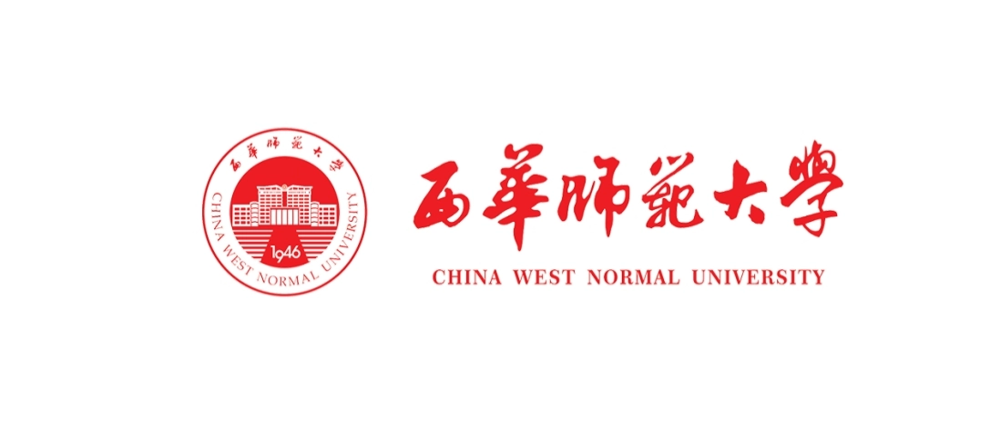
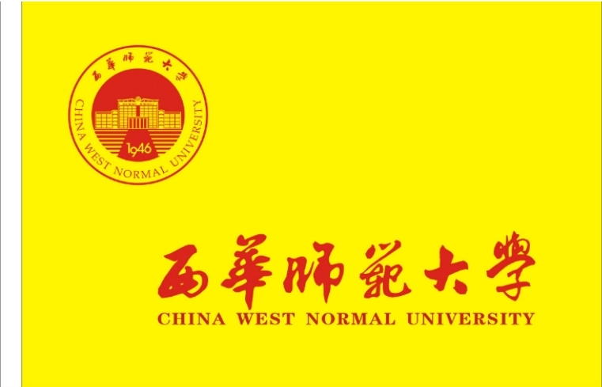
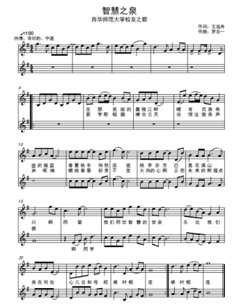

历史沿革
前身溯源
1946年在四川省三台县建立私立川北农工学院。设农艺、农经、化学工程、土木工程、工商管理、数理、农田水利七个系。1949年，私立川北农工学院与西山书院合并组建私立川北大学。设文商学院、理工学院和农工学院，增设中文、哲史二个系。1950年，学校迁至南充市，与川北文学院合并，成立公立川北大学。设水利、土木、化工、电机、采矿五个一年制专修科。欣欣向荣
2020年7月2日，西华师范大学加入成渝地区双城经济圈高校艺术联盟。2022年9月，西华师范大学等9所高校共同参与的黄河流域高校金石书画研究与创新发展联盟成立。 [10]2023年7月2日，西华师范大学新增为全国师范类院校教育资源共建联盟成员单位。 [11]2023年7月23日，西华师范大学加入西部师范大学教师教育创新与发展联盟。 [12]
2025年10月25日，西华师范大学考古文博学院成立揭牌仪式举行。 [169]
办学条件
院系设置 截至2026年2月，学校设有25个学院，78个本科专业，学科专业覆盖法学、教育学、文学、历史学、理学、工学、农学、管理学、艺术学、经济学等10个学科门类。 [9] [159] 西华师范大学院系专业一览表（截至2024年7月） 学院 本科专业 西华师范大学马克思主义学院 - 西华师范大学文学院 汉语言文学、汉语国际教育、秘书学 [161] 西华师范大学历史文化学院 历史学（师范）、文物与博物馆学 [21] 西华师范大学公共外语学院 - 西华师范大学管理学院 公共事业管理、人力资源管理、旅游管理、劳动与社会保障、土地资源管理 [22] 西华师范大学商学院 经济学、市场营销、工商管理、国际经济与贸易、会计学 [23] 西华师范大学体育学院 体育教育、社会体育指导与管理、运动训练、武术与民族传统体育 [24] 西华师范大学书法学院 书法学 [25] 西华师范大学公共数学学院 - 西华师范大学电子信息工程学院 电子信息工程、电子信息科学与技术、应用电子技术教育、飞行器控制与信息工程 [26] 西华师范大学环境科学与工程学院 环境科学（2000年开始招生）、环境工程（2003年开始招生）、环境生态工程（2021年开始招生） [27] 西华师范大学地理科学学院 地理科学、人文地理与城乡规划、地理信息科学、测绘工程 [28] 西华师范大学学前与初等教育学院 学前教育、小学教育 [29] 西华师范大学国际学院 - 西华师范大学教育学院 教育学、心理学、教育技术学 [30] 西华师范大学新闻传播学院 新闻学、播音与主持艺术、网络与新媒体 [160] 西华师范大学外国语学院 英语（师范）、商务英语、翻译、日语 [31] 西华师范大学政治与行政学院 思想政治教育、行政管理、政治学与行政学 [32] 西华师范大学法学院 法学 [33] 西华师范大学音乐学院 音乐学、音乐表演、舞蹈学、舞蹈表演 [34] 西华师范大学美术学院 美术学、环境艺术、视觉传达、服装与服饰设计、绘画 [35] 西华师范大学数学与信息学院 数学与应用数学、信息与计算科学、统计学、人工智能 [36] 西华师范大学物理与天文学院 物理学（师范）、天文学、材料物理 [37] 西华师范大学化学化工学院 化学（师范）、应用化学、科学教育（师范） [38] 西华师范大学生命科学学院 生物科学、园林、生物技术、野生动物与自然保护区管理、生态学 [39] 西华师范大学计算机学院 计算机科学与技术（师范）、软件工程、网络空间安全 [40] 西华师范大学教师教育学院 - 西华师范大学国学院
学术研究
科研平台 截至2026年2月，学校建有教育部重点实验室1个、国家生态质量综合监测站1个、四川省重点实验室1个、四川省工程研究中心1个、四川省野外科学观测研究站1个、四川省教育厅高校重点实验室10个、四川省林业和草原局长期科研基地2个、四川省林业和草原局重点实验室1个。拥有四川省社会科学高水平研究团队3个、四川省青年科技创新团队3个。建有多个省（部）级重点中华文化研究院和人文社科重点研究基地，多个协同创新和成果转化机构。 [9] [159] 研究平台（截至2024年7月） 平台类型 平台名称 获批时间 教育部重点实验室 西南野生动植物资源保护教育部重点实验室 [111] 2008年 博士后创新实践基地 西南野生动植物资源保护教育部重点实验室 [144] 2011年 四川省重点实验室 化学合成与污染控制四川省重点实验室 [110] 2009年 四川省2011协同创新中心 组织修复材料工程技术协同创新中心 [112] 2015年 四川省工程实验室 干旱河谷土壤侵蚀监测与控制工程实验室 [142] 2023年 四川省野外科学观测研究站 栗子坪大熊猫生态与保护四川省野外科学观测研究站 [143] 2021年 四川省高校重点实验室 最优化理论与应用四川省高校重点实验室 [114] - 丘陵地区国土资源统筹利用工程实验室 [113] 2009年 省（部）级重点中华文化研究院和人文社科重点研究基地 习近平文化思想研究中心四川省协同研究基地（西华师范大学）、蜀道研究院、四川省教育发展研究中心、区域文化研究中心、四川大学生思想政治教育研究中心、蜀道文化研究中心、朱德同志故居纪念馆－西华师范大学四川省革命文物协同研究中心、巴基斯坦研究中心、国家体育总局体育文化发展中心西华师范大学体育文化研究基地、四川省落下闳研究中心、地方档案与文献研究中心、四川省铸牢中华民族共同体意识研究培育基地、四川党史党建研究中心、四川研学旅行发展研究中心 - 省（部）级协同创新和成果转化机构 国家淡水渔业工程技术中心西南分中心、国家林业和草原局竹资源培育工程技术研究中心大熊猫主食竹保育示范基地、四川省组织修复材料工程技术中心、省级大学科技园 - 注：仅部分列举 研究成果 截至2026年2月，“十三五”以来，学校教师主持承担科研项目7900余项，其中国家社会科学基金、国家自然科学基金及其他国家级项目300余项，省部级项目680余项；发表论文16840余篇，其中SCI、SSCI、A&HCI收录2670余篇，CSSCI、CSCD收录1560余篇，出版著作410余部；获省级及以上科研成果奖100余项，其中教育部优秀成果奖2项、农业农村部农业技术推广成果奖和中华农业科技奖2项、国家林业和草原局梁希林业科学技术奖1项；授权国家发明专利194项、实用新型专利198项。学校在大熊猫生态保护领域，创建了全球第一个大熊猫野外观测站，出版了全球第一部大熊猫生态学专著，牵头开展了首次全国大熊猫野外调查，促成了我国第一次野生动物保护国际合作，成立了全国首个大熊猫学院，被誉为“中国的熊猫大学”。学校科研团队领衔发现了“CWNU”星团和“峨眉”星团，其中，“CWNU”星团是国际上首次以中国高校及科研院所名字命名编号的大样本天体星表。 [9] [159] 研究成果（截至2026年2月） 项目（课题）名称 所获奖项 获奖年份 野生大熊猫栖息地研究与种群复壮技术 四川省科技进步一等奖 2018年 [121] 多金属危废模块化回收综合利用工艺技术系统集成及应用 四川省科技进步奖三等奖 2019年 [120] 约束最优与平衡问题的理论与方法 四川省科技进步奖三等奖 2019年 [119] 非线性密码函数及其相关编码 教育部高等学校科学研究优秀成果奖自然科学类二等奖 2021年 [118] 智能物联网技术及应用 中国电子学会科学技术发明二等奖 2023年 [115] 生态脆弱区蚕桑绿色高效与转型升级关键技术集成创新及应用推广 全国农牧渔业丰收二等奖 2023年 [116] 两栖动物对环境变化的生态适应性研究 南充市科技创新成果奖二等奖 2023年 [117] 非凸极小化算法研究 南充市科技创新成果奖二等奖 2023年 [117] 硅氧化物/碳复合负极材料的储锂性能调控和电化学反应机理 南充市科技创新成果奖三等奖 2023年 [117] 干热河谷侵蚀沟形态规律及其环境响应 南充市科技创新成果奖三等奖 2023年 [117] 人类一自然干扰下西南山地珍稀兽类保护与应用 南充市科技创新成果奖三等奖 2023年 [117] 注：仅部分列举 学术资源 馆藏资源 截至2026年1月，西华师范大学图书馆设有华凤校区、行署校区分馆。两个校区图书馆总面积34000平方米（其中华凤校区图书馆24500平方米，行署校区图书馆9500平方米），两个校区图书馆阅览座位近4500个。有纸质图书355万余册，电子图书543万余册，电子期刊130.6万余册，珍藏古籍5600余种、74000余册，涵盖师范和非师范专业的理、工、文、史、哲、政、经、法等学科。图书馆经四川省政府办公厅批准成为省古籍重点保护单位，建成四川省方志馆西华师范大学分馆、川渝方志馆西华师范大学分馆，是四川省内第三所揭牌的高校方志分馆，也是第二个川渝共建的方志分馆。馆藏线装书、善本书8000余册，其中有明洪武年间的《洪武正韵》、明嘉靖年间的《韩诗外传》、清代《西域地理图说》等重要文献，开展古籍普查、古籍保护、古籍修复，可移动文物普查等工作。有川渝各地方志、地情文献2700余册。 [167] 学术刊物 《西华师范大学学报》（哲学社会科学版） 《西华师范大学学报（哲学社会科学版）》是四川省教育厅主管、西华师范大学主办的综合性学术理论刊物，创刊于1979年，双月刊。本刊是《中国人文社会科学引文数据库》来源期刊、《中国学术期刊综合评价数据库》来源期刊、《中国知网》全文收录期刊、《中国学术期刊（光盘版）全文收录期刊》《中国学术期刊（光盘版）检索与评价数据规范》执行优秀奖期刊、《万方数据资源系统（Chinalnfo）数字化期刊群》入网期刊。 [4] 《西华师范大学学报（哲学社会科学版）》坚持人文社会科学的正确导向，注重反映社科学术研究的最新成果，积极追踪社会学术热点和理论前沿，所刊论文具有科学性、创新性和实践性。本刊主要刊载哲学、政治学、法学、经济学、文学、语言学、历史学、教育学、管理学、艺术学等学科的学术论文，辟有“国家治理现代化”“马克思主义与当代中国”“共同富裕研究”“数字经济研究”“蜀道研究”“写本学研究”等特色栏目。先后获得“中国人文社科学报核心期刊”“全国高校百强社科期刊”、全国“高校优秀社科期刊”“中国人文社会科学综合评价AMI扩展期刊”“四川省社会科学精品期刊”“四川省质量一级期刊”等荣誉称号。2023年，期刊“写本学研究”栏目被评为全国“高校社科期刊特色栏目”。 [4] 《西华师范大学学报》（自然科学版） 《西华师范大学学报（自然科学版）》是四川省教育厅主管，西华师范大学主办的综合性自然科学学术刊物。1980年创刊。主要刊登自然科学领域（数学、物理学、化学、生命科学、地理学、环境科学、电子学、计算机科学等）的创新性和重要性研究成果，主要包括基础理论研究、应用技术研究及学科教育教学方面的研究论文、综合评述和研究简报。其宗旨是：展示优秀研究成果，促进学术交流，为社会主义现代化建设服务。本刊是“全国优秀高校自然科学学报”“四川省优秀期刊”“四川省质量一级期刊”“四川省高校优秀科技期刊”“CAJ-CD规范执行优秀期刊”。本刊是《中国学术期刊综合评价数据库》来源期刊，已被俄罗斯《文摘杂志》（AJ）《中国知网》《中国核心期刊（遴选）数据库》《中文科技期刊数据库》（维普网）《中国学术期刊（光盘版）》《超星期刊域出版系统》全文收录。本刊不收审稿费和版面费，同时根据文章质量和篇幅支付通信作者较高稿酬。 [5]
校园文化
学校标志 校名

西华师范大学（China West Normal University），简称“西华师大”、CWNU。 [125] 校徽
校徽包括徽志和徽章。徽志为圆形造型，主体图案为学校主教学楼朝阳楼和梯步组成，朝阳楼主体建筑设计寓意为“教育托起明天的太阳”，梯步体现学校办学发展历程；内环下方“1946”表示学校诞生于1946年，外环为学校中英文名称。徽章为印有徽志的圆形证章，教职工佩戴徽章底色为蓝色，学生佩戴徽章底色为红色，图案和字体均为金色。 [18] 校旗

校旗旗面为黄色，徽志和校名为红色，位于旗面左上位置，校旗横挂长宽比为3：2。 [18] 精神文化 校训 勤奋、求实、敬业、创新 [9] 校歌

《云飞扬》 [74] 作词：龙显昭、佘正松 作曲：王佑贵 巴山高，嘉陵长，钟灵毓秀出栋梁。 众学子，来四方，进德修业当自强 滋雨露，沐朝阳，满圆桃李播春光。 天辽阔，鹰高翔，西华师大云飞扬！ 时代重任永不忘，传承文明振家邦， 时代重任永不忘，传承文明振家邦，振家邦！ 校庆日 西华师范大学校庆日为每年5月16日。 [18] 社团文化 社团文化 名称 简介 书法协会 书法协会以增强同学们自主学习和交流的兴趣，提高专业知识、拓宽见识，丰富大学生的业余生活，提高自身的艺术修养能力为目的，进行自我管理、自我服务和自我完善的专业性的团体。书法协会下设办公室、宣传部、会员部、活动部、外联部。书法协会是由在校的书法爱好者组织起来的具有群众性的大学生艺术社团，是由大学生社团联合会和学院团总支领导的独立社团 [147] 美术协会 美术协会由美术学院硕士研究生导师刘清扬教授担任名誉会长，由美术学院团总支书记冯菊老师担任指导老师。该协会是在2002年美术沙龙的基础上整合发展起的社团，具有高起点、高目标、高效益的优点，注重学术研究与社会接轨。美术协会下设办公室、团支部、宣传部、组织部、外联部、活动部、学术部、艺术创想部。该协会是一个真正将艺术带进每个人生活的协会，未来协会将以更加优异的成绩，回报每个真正热爱艺术的人 [147] 艺想视觉研究协会 艺想视觉协会是由美术学院视觉传达设计专业老师袁征博老师为指导老师，以视觉传达设计专业学生和喜爱艺术为主力提供学生学习探索与实践交流的协会，集实践交流、素质教育、创新培养、个性发展于一体。拥有专业的指导教师，旨在为艺术爱好者提供实践交流的平台。艺想视觉研究协会下设组织部、外联部、宣传部、创作部四个部门。协会有利提高同学们的专业素质,激发同学们的学习兴趣，利用互联网+信息共享、组织开展讲座、专业竞赛推介、实践训练等常规活动，提升大学生对于艺术的修养和鉴赏能力，丰富和充实大学生课余时间，提升大学生实践能力 [147] 化学学会 西华师大化学学会，全称西华师范大学学生化学学会，是在校团委、院党总支的带领下在该校最早成立的学术社团之一。接受大学生社团联合会的统一管理，与化学化工学院团总支一同开展工作。化学学会本着以马列主义理论为指导，理论与实践相结合，提高会员科研能力，培养实事求是的工作作风，利用化学专业知识为社会做贡献的原则发展会员和开展活动，它为活跃第二课堂，培养提高学生对化学的兴趣和动手能力，丰富同学们的业余生活作出了一定的贡献 [148]
点我回到顶部